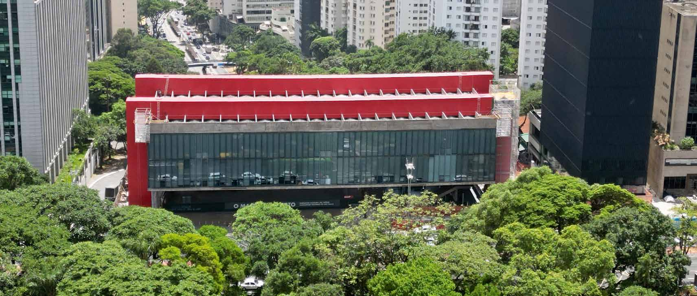
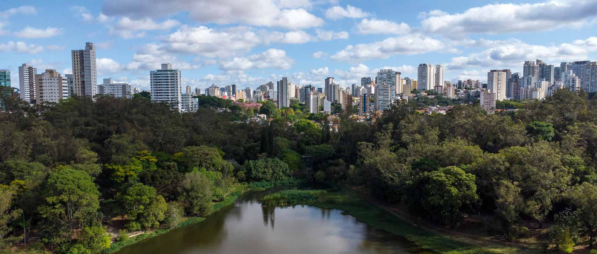

Plano de Ação Climática do Município de São Paulo (2020–2050), Revisão 2025. Conteúdo
reorganizado para leitura, consulta e navegação em ambiente digital.
Selecione uma parte do Plano. Os capítulos 1 e 2 estão integralmente disponíveis nesta demonstração; os
demais itens abrem páginas provisórias que representam a estrutura prevista.
A cidade de São Paulo se consolidou nos últimos anos como referência
global em sustentabilidade urbana. Foi reconhecida pela ONU como “Cidade
Modelo de Desenvolvimento Sustentável” e “Cidade Árvore do Mundo”, em
razão do conjunto de políticas de arborização, mobilidade limpa e
recuperação de áreas verdes.
Ponto importantíssimo dessa cruzada foi a criação do Plano de Ação
Climática de São Paulo (PlanClima SP), em sintonia com o compromisso
global de conter o aumento da temperatura média do planeta.
E agora, em 2025, reforçamos nosso empenho fazendo, além das avaliações
anuais, a revisão estrutural do PlanClima SP, que define os próximos
passos da transição ecológica, com metas até 2050 para neutralização de
emissões e resiliência urbana.
Nessa revisão, merece destaque o ineditismo do Orçamento Climático, que
passa a integrar o Orçamento Geral do Município de São Paulo, conferindo
maior gestão, monitoramento e avaliação das ações climáticas.
Não dá para falar em preservar o meio ambiente sem falar de recursos. E
é com foco nisso que se insere o Orçamento Climático. Afinal, para
transformar a frota a diesel em frota elétrica, levantamos R$ 6,5
bilhões. Em outro exemplo, estamos investindo R$ 14 bilhões na construção
de quatro Ecoparques e quatro Unidades de Recuperação Energética (UREs),
que vão gerar 250 mil megawatts cada, o suficiente para abastecer 75% da
energia pública da cidade. É o Orçamento Climático em ação.
Outra novidade trazida pela revisão do PlanClima SP foi o foco na Justiça
Climática, incluindo metas que se destinam a grupos prioritários e
vulneráveis, concentrando o olhar para além das vulnerabilidades
socioeconômicas e contemplando, por exemplo, a primeira infância e outros
segmentos sensíveis aos impactos climáticos.
Finalmente merece destaque a ampliação do número de secretarias
envolvidas no PlanClima SP, de 13 para 24, com a inclusão de novas pastas
responsáveis por metas específicas, que vão ampliar ainda mais o
comprometimento da cidade com a questão climática.
Em meio aos desdobramentos da COP30, a 30ª Conferência das Nações Unidas
sobre Mudança do Clima, quando governos e a sociedade civil mostraram o
que pretendem fazer para combater as mudanças climáticas, São Paulo dá o
exemplo e mostra o que já está fazendo. Ações concretas como, por exemplo,
o plantio de 150 mil árvores somente em 2025, a coleta seletiva em todas
as ruas da cidade, entre tantos outros avanços.
Páginas 14–15 do PDF
Palavra do Secretário Executivo de Mudanças Climáticas
O Plano de Ação Climática de São Paulo, fruto de visionária Gestão
Municipal, entra em nova e promissora fase.
A vertente da variável climática foi absorvida por todas as Secretarias
Municipais e um trabalho coeso e firme evidenciou que a maior cidade do
Brasil lidera o protagonismo ecológico e promove ações concretas que a
convertem num padrão de resiliência.
Além das avaliações anuais, a revisão estrutural em 2025 mantém as
diretrizes rumo à descarbonização total em 2050, fiel ao compromisso
brasileiro firmado no Acordo de Paris em 2015 e mantém a meta de
transição energética, avançando na eletrificação de sua frota de ônibus.
Adquiriu-se expertise suficiente para aprimorar suas métricas e
monitoramento, mediante análise técnica primorosa, conduzida,
prioritariamente, por zelosa equipe de especialistas.
A comunidade foi ouvida e participou com sugestões válidas e
efetivamente aproveitadas, inclusive ofertadas pelo prestimoso
Legislativo Paulistano.
Destaca-se o pioneirismo do Orçamento Climático, a integrar o Orçamento
Geral do Município de São Paulo, de maneira a propiciar a execução de
tudo aquilo que interfere com os fenômenos extremos, cada vez mais
intensos e frequentes.
Na versão inicial, eram treze as Secretarias diretamente envolvidas e a
versão revisitada incluiu mais onze, a evidenciar o empenho desta gestão
no adequado trato de uma questão que é o maior desafio já enfrentado
pela humanidade.
Enfatizou-se o tema “Justiça Climática”, para melhor tutela dos
vulneráveis e para a conscientização da cidadania quanto à
responsabilidade partilhada em relação à adaptação da metrópole para o
que ainda há de vir.
Cumpre agora implementar as estratégias atualizadas e conclamar a
população a colaborar, pois a execução do PlanClima SP, por sua dimensão
e abrangência, é tarefa de todos.
Capítulo 1 · páginas 16–19 do PDFMeio ambiente
1 Apresentação

Vista área do Masp, na Avenida Paulista Secom
Este documento refere-se à revisão do Plano de Ação Climática do Município de São Paulo (PlanClima SP), que
busca orientar a atuação do governo municipal, incorporando de forma sistemática a variável climática aos
processos de tomada de decisão. O PlanClima SP surge em um contexto de ação imediata, uma vez que as
mudanças climáticas já estão em curso e vêm impondo novas formas de viver e de organizar a cidade. Nesse
sentido, é fundamental que o Município de São Paulo acompanhe essas transformações. Assim, o Plano
apresenta-se não apenas como um avanço no campo ambiental, mas também como um instrumento estratégico de
grande relevância para a administração municipal, ao direcionar e qualificar as políticas climáticas da
cidade.
Para assegurar o alinhamento contínuo, o acompanhamento das transformações em curso e a incorporação de
novos conhecimentos e diretrizes, o PlanClima SP deve ser revisado, no mínimo, a cada novo ciclo de governo.
Dessa forma, a revisão do Plano tem como propósito fortalecer seus mecanismos de acompanhamento e
governança, bem como ampliar a integração com metas e compromissos nacionais e internacionais, como as
Contribuições Nacionalmente Determinadas (NDCs), os Objetivos do Desenvolvimento Sustentável (ODS) e o
Acordo de Paris. A Prefeitura reconhece que este é um momento para agir, que a frequência e a intensidade
dos eventos climáticos tendem a aumentar, e que é necessário estar cada vez mais preparada para enfrentar
esses desafios.
A revisão, iniciada em janeiro de 2025, pela Secretaria Executiva de Mudanças Climáticas, contou com o
apoio técnico das secretarias municipais, por meio do Grupo de Trabalho Intersecretarial (GTI), e da
sociedade civil, por meio dos processos participativos estabelecidos, como a criação de um Grupo de Trabalho
Participativo (GTP) e Consulta Pública.
1.1 Contextualização, marco legal e institucional
A elaboração da primeira versão do Plano contou com o apoio da rede de cidades C40, bem como a participação
ativa da sociedade civil, da academia e de diversas secretarias e órgãos municipais. Em 2021, o PlanClima SP
foi oficialmente publicado por meio do Decreto nº 60.289, de 3 de junho de 2021.
De acordo com o Decreto, cabe à Secretaria Executiva de Mudanças Climáticas (SECLIMA), vinculada à
Secretaria de Governo Municipal (SGM), acompanhar a implementação do PlanClima SP, a partir da elaboração do
Relatório de Acompanhamento, bem como a realização de sua revisão.
Cabe ainda destacar, que o PlanClima SP, enquanto instrumento estratégico de longo prazo e integrante do
Sistema Municipal de Planejamento Urbano instituído pelo Plano Diretor Estratégico de São Paulo (PDE – Lei
nº 16.050/2014 e suas revisões), deve ser objeto de monitoramento e revisão contínuos, em articulação com o
PDE. Esse alinhamento é fundamental para assegurar a incorporação progressiva das diretrizes e avanços
relacionados às mudanças climáticas, inclusive no âmbito da próxima revisão do Plano Diretor, prevista para
2029.
Histórico das ações que levaram até a versão atual
São Paulo foi uma das cidades fundadoras do ICLEI.
São Paulo associou-se a outras 17 cidades na criação daquilo que viria a ser o Grupo C40 de Grandes
Cidades para a Liderança Climática.
Criação do Comitê Municipal de Mudanças Climáticas e Ecoeconomia Sustentável.
Promulgação da Política Municipal de Mudança do Clima, por meio da Lei nº 14.933/2009, consolidando o
antigo Comitê criado em 2005 como Comitê Municipal de Mudança do Clima e Ecoeconomia.
Publicação do documento Diretrizes para o Plano de Ação da Cidade de São Paulo para Mitigação e
Adaptação às Mudanças Climáticas.
Publicação do resultado inicial do Inventário de Gases de Efeito Estufa (períodos 2003–2009 e
2010–2011).
Plano Diretor Estratégico (PDE)-Lei 16.050/2014, reconhece formalmente como objetivo estratégico da
Política de Desenvolvimento Urbano a mitigação das emissões de gases de efeito estufa e a adaptação aos
impactos da mudança do climáticas.
PMSP ASSINA O COMPROMISSO DEADLINE 2020, PROPOSTO PELA C40.
Início da elaboração do Plano de Ação Climática do Município de São Paulo (PlanClima SP).
Publicação do terceiro inventário de emissões de gases de efeito estufa (período 2010–2017).
Decreto nº 60.289/2021 institui o Plano de Ação Climática do Município de São Paulo – PlanClima SP.
Decreto nº 60.290/2021 dispõe sobre as atribuições da Secretaria Executiva de Mudanças Climáticas
(SECLIMA).
Publicação anual dos Relatórios de Acompanhamento do PlanClima SP.
Publicação dos Inventários de Emissão de Gases de Efeito Estufa (período 2018–2022).
PRIMEIRA REVISÃO DO PLANCLIMA SP.
Capítulo 2 · páginas 20–23 do PDFRespiro
2 Visão, Objetivos e Metas

Parque da Aclimação, no Centro da cidade Ciete Silvério/Secom
Visão
O PlanClima SP busca o atingimento da neutralidade de emissões de gases de efeito estufa até 2050,
contribuindo para o cumprimento do Acordo de Paris, com o objetivo de manter o aquecimento global abaixo de
2°C e, preferencialmente, abaixo de 1,5°C. Dessa forma, apresenta como Visão para 2050:
Uma cidade menos desigual e mais preparada para responder aos impactos da
mudança do clima, neutra em carbono e que promova acesso a serviços públicos de qualidade, proporcionando
bem-estar e desenvolvimento econômico, inclusivo e sustentável para todos.
Objetivos e metas gerais
Para alcançar essa visão climática, o PlanClima SP apresenta os seguintes objetivos gerais, metas
incondicionais (que dependem exclusivamente da gestão municipal) e metas condicionadas (que dependem da
cooperação de atores externos à administração pública):
Empreender a ação política necessária para a redução das emissões de gases de efeito estufa do
Município de São Paulo, considerando as competências municipais e de atores externos.
Metas gerais de redução de emissões
Tipo de meta
Horizonte
Compromisso
Meta incondicional
2030
Até 2030, o Município de São Paulo deverá reduzir em 20% suas emissões de gases de efeito estufa
em relação ao ano-base de 2017.
Meta condicionada
2030
Até 2030, o Município de São Paulo reduzirá em 50% suas emissões de gases de efeito estufa em
relação ao ano-base de 2017, caso sejam realizadas ações de descarbonização que não estão sob
controle direto do Município.
Meta condicionada
2050
Até 2050, o Município de São Paulo reduzirá a zero suas emissões líquidas de gases de efeito
estufa, caso sejam realizadas ações de descarbonização que não estão sob controle direto do
Município.
Implementar as medidas necessárias para fortalecer a resiliência do Município, reduzindo as
vulnerabilidades sociais, econômicas e ambientais da população paulistana e ampliando sua capacidade de
adaptação frente aos riscos climáticos existentes.
Capítulo 3 · página 24 do PDF
3 Contexto da cidade de São Paulo
Conteúdo a ser disponibilizado na versão completa do PlanClima SP na web.
3.1 Papel das cidades na mudança do clima
3.2 Características demográficas, econômicas e socioambientais
3.3 Dados de precipitação
3.4 Dados de temperatura
3.5 Outros registros de extremos climáticos
Capítulo 4 · página 36 do PDF
4 Síntese atualizada do inventário de gases de efeito estufa
Conteúdo a ser disponibilizado na versão completa do PlanClima SP na web.
4.1 Distribuição setorial das emissões
4.2 Metas de redução de emissões
4.3 Emissões projetadas e observadas
4.4 Considerações complementares
Capítulo 5 · página 52 do PDF
5 Avaliação dos riscos climáticos da cidade
Conteúdo a ser disponibilizado na versão completa do PlanClima SP na web.
Capítulo 6 · página 60 do PDF
6 Justiça climática
Conteúdo a ser disponibilizado na versão completa do PlanClima SP na web.
Capítulo 7 · página 66 do PDF
7 Balanço 2021-2024
Conteúdo a ser disponibilizado na versão completa do PlanClima SP na web.
7.1 Geral
7.2 Balanço do 4º relatório de acompanhamento por estratégia
Capítulo 8 · página 70 do PDF
8 Metodologia e processos de atualização
Conteúdo a ser disponibilizado na versão completa do PlanClima SP na web.
8.1 Abordagem geral de revisão e nova estrutura
8.2 Construção da revisão
8.3 Contribuições recebidas e como foram incorporadas
Capítulo 9 · página 78 do PDF
9 Plano de ação – nosso caminho até 2050
O conteúdo integral deste capítulo será disponibilizado na versão completa.
Esta demonstração inclui uma ficha de meta para exemplificar o padrão de transposição.
9.1 Rumo Ao Carbono Zero
9.2 Adaptar a cidade de hoje para o amanhã
9.3 Proteger Pessoas e Bens
9.4 Cuidar dos Biomas, fortalecer a cidade
9.5 Gerar trabalho e riqueza sustentáveis
Páginas 86–87 do PDF
Exemplo de transposição de uma ficha de meta
Em vez de reproduzir a ficha como imagem, cada campo passa a fazer parte da estrutura da página e pode
ser lido, pesquisado e copiado separadamente.
Rumo ao carbono zero · Meta 2
Publicar documento técnico com critérios de eficiência energética aplicáveis às
edificações, com o objetivo de subsidiar futuras revisões do Código de Obras e Edificações
Descrição
A iniciativa busca reduzir a demanda energética no setor de edificações, incentivar soluções
construtivas mais eficientes e contribuir para a diminuição das emissões associadas ao consumo de
energia no ambiente urbano. Espera-se que o documento se torne subsídio para a próxima revisão do
Plano Diretor, cuja versão vigente permanece em vigor até 2029, quando deverá ser revisada. A partir
desse processo, poderão ser propostas adequações no Código de Obras, em alinhamento às novas
diretrizes estabelecidas.
Indicador
Documento técnico com critérios de eficiência energética publicado
Prazo
2028
Secretaria responsável
SECLIMA
Secretarias de apoio
SIURB, SEHAB e SMUL
Setor de mitigação
Energia e edificações
Risco climático
Não se aplica
Ações vinculadas
Ações para implementação da Meta 2
Ação
Indicador
Prazo
Responsável
Apoio
2.1 Criar Grupo de Trabalho para definição dos critérios de eficiência
energética nas edificações, com base nos estudos de consumo publicados pela Prefeitura.
Portaria do Grupo de Trabalho publicada
2027
SECLIMA
Não se aplica
Capítulo 10 · página 218 do
PDF
10 Governança para a ação climática
Conteúdo a ser disponibilizado na versão completa do PlanClima SP na web.
10.1 Instâncias de governança para ação climática
10.2 Orçamento Climático
10.3 Atores externos
10.4 Sistema de Monitoramento e Reporte
10.5 Plataformas de visualização e reporte de dados do Município de São
Paulo
Páginas 228–229 do PDF
Equipe técnica
Prefeito da Cidade de São Paulo
Ricardo Nunes
Coordenação geral
José Renato Nalini
Secretário Executivo da Secretaria Executiva de Mudanças Climáticas
Luciana Feldman
Chefe de Gabinete da Secretaria Executiva de Mudanças Climáticas
Equipe técnica de coordenação
SECLIMA
Alessandro Bender
Coordenador da Secretaria Executiva de Mudanças Climáticas
José Teles Mendes
Ludmila Mello de Amorim
Luiza Alegre Caballero
Mariana Teixeira Xavier
Murilo Martins Oliveira
Equipe de apoio SECLIMA
Camila Cristina da Costa Moreira
Fabio Mariano Espíndola da Silva
Equipe de comunicação SECLIMA
Maria Angélica Ferri Medeiros da Cunha
Gabriel Gonçalves Oliveira
Grupo de Trabalho Intersecretarial para a revisão 2025 do PlanClima SP
CET
Marcelo Guidolim
Silvio Shoiti Hagiwara
SEGES
Bayard do Couto e Silva Junior
Mariana Correa Barra
SEHAB
Caetano Marques de Olinda Lima
Marco Aurelio Lessa Villela
Vania Cristiane Flores Salinas
SEHAB/SEPM
Daisy Pinato
Maria Teresa Cardoso Fedeli
SEPLAN
Gustavo Guimarães de Campos Rabello
Maria Beatriz de Oliveira Monteiro
SGM/SEPE
Amanda Theodoro de Souza
Elizete Regina Nicolini
SGM/SEDP
Cintia Oliveira Szajnberg
Rodrigo Ribeiro de Lima
SIURB
Douglas de Paula D’Amaro
Rafael Alexandre do Nascimento Purificação
SMADS
Cristiane Leonora da Conceição
Refferson Lima Silva
SMDET
Bruno Nascimento Araújo de Paula
Guilherme Pereira Roncoletta
SMDHC
Adriana Vasconcellos Vieira de Oliveira Luiz
Regina Célia da Silveira Santana
SMDHC/SESANA
Jordana da Silva Menon
Mouzart Nogarol Filho
SME
Beatriz Sampaio Miguel
Eduardo Murakami da Silva
Talitha Mota Justino
Guilherme Arbache
SMS
Gianlucca Vergian Dalenogare
Luiz Carlos Paranhos
SMSU
Cleudson Barreiros Gonçalves
Edson Bispo dos Santos
SMSUB
Ernesto Massayoshi Sumi
Gabriel Santos da Mota
SMSUB/SELIMP
Barbara Dionisio Chagas
Luciana Claro Artilheiro
SMT
Felipe L. Vogel
Fernando S. Miquelin
SMT/SETRAM
Nicolas Xavier de Carvalho
Rafael Mielnik
SMUL
Diego Xavier Leite
Sarita Tobias de Andrade
SP–REGULA
David Tegangno
Mauro Haddad Nieri
SPTRANS
Felipe Ramon de Carvalho
Wilma Xavier dos Santos
SVMA
Débora Cristina Santos Diogo
Laura Lucia Vieira Ceneviva
Grupo de Trabalho Participativo para a revisão 2025 do PlanClima SP
Anhembi Morumbi
Andrea Gonçalves Carneiro
Associação Nacional de Transportes Públicos – ANTP
Olímpio Alvares
Associação Paulista dos Gestores Ambientais – APGAM
Caroline Kerestes
C40 Cities Climate Leadership Group
Diego Blanc
Centro Brasileiro de Análise e Planejamento – CEBRAP
Alexandre Fontenelle
Centro de Estudos em Sustentabilidade – FGVces
Mariana Nicoletti
Cidade a Pé
Ana Carolina Nunes
Cauê Janini
Elio Jovart
Juliana Trento
Rosemeiry Leite
Cidades Sustentáveis
Naira Samezina
Nina Orlow
Coalizão pelo Clima, Crianças e Adolescentes – CLICA
Júlia Gouveia
Companhia Ambiental do Estado de São Paulo – CETESB
Ana Carolina Medeiros de Camargo
Daniel Soler Huet
Omar de Almeida Cardoso
Companhia de Gás de São Paulo – COMGÁS
Dellaney Vidal Di Maio Neto
Conselho Municipal de Meio Ambiente – CADES
Liliane Neiva Arruda Lima
Cooperativa de Coleta Seletiva da Capela do Socorro – COOPERCAPS
Carol Carreiro
Telines Basilio
Departamento de Hidráulica e Saneamento – SHS/EESC/USP
Eduardo Mario Mediondo
Eletropaulo Metropolitana Eletricidade de São Paulo – ENEL
Lincoln Sant Ana Morales
Mateus Basilio Gomes
Priscila Erosa Sebastiao
Escola de Artes, Ciências e Humanidades – EACH/USP
Alexandre Igari
Marina Briant
Paulo Almeida
Escola de Engenharia de São Carlos – EESC/USP
Eduardo Mario Mediondo
Faculdade de Arquitetura, Urbanismo e Design – FAU/USP
Denise Helena Silva Duarte
Faculdade de Medicina – FM/USP
Paulo Saldiva
Faculdade de Saúde Pública – FSP/USP
Gabriela Di Giulio
Thiago Nogueira
Faculdades Metropolitanas Unidas – FMU
Elisangela Ronconi
Patrícia de Lima Nishi
Formigas de Embaúba
Rafael Ribeiro Visconti
GT Carbono
Lilian Sarrouf
Ruy Monteiro
Instituto Árvores Vivas
Juliana Gatti Pereira Rodrigues
Instituto Caminhabilidade
Leticia Leda Sabino
Instituto de Energia e Ambiente – IEE/USP
Célio Bermann
Paulo Antonio de Almeida
Pedro Roberto Jacobi
Priscila Rosseto Camiloti
Instituto de Estudos Avançados – IEA/USP
Carlos Nobre
Felipe Chibas Ortiz
Instituto de Pesquisas Tecnológicas do Estado de São Paulo – IPT
Filipe Antonio Marques Falcetta
Instituto Limpa Brasil
Silvia Regina Linberger dos Anjos
Instituto Pólis
Nelson Saule Júnior
Rodrigo Iacovini
International Council for Local Environmental Initiatives – ICLEI
Aline Cardoso
Ana Wernke
International Council on Clean Transportation – ICCT
André Gaspar Cieplinski
Ordem dos Advogados do Brasil – OAB
Adriana Martorelli
Ana Brito
Edvania Cristina Bolonhin
Fernanda Tanure
Luciana Lanna
Mauro Przewonzinski
Pedro Baracui
Renan Rosolem Machado
Stella Vivona
Scipopulis
Roberto Speicys
Thayane Carvalho
Secretaria Estadual dos Transportes Metropolitanos de São Paulo – STM
Mariana Ohira Hashimoto
Sindicato da Habitação de São Paulo – SECOVI
Carlos Borges
Patrícia Bittencourt
Sociedade civil
Flávio Soares
Sociedade Vegetariana Brasileira
Julia Lopes
Luiz Eduardo Bittencourt Amorim
Universidade Federal de São Paulo – UNIFESP
Dan Levy
Universidade Federal do ABC – UFABC
Luciana Travassos
Urban95 | CECIP – Centro de Criação de Imagem Popular
ESTAÇÃO METEOROLÓGICA DO INSTITUTO DE ASTRONOMIA, GEOFÍSICA E CIÊNCIAS
ATMOSFÉRICAS – IAG/USP. Dados meteorológicos da cidade de São Paulo.
Disponível em:
https://www.estacao.iag.usp.br/
Acesso em: 29 dez. 2025.